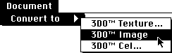
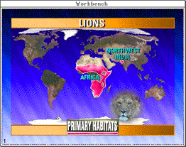

- Launch Photoshop and open the desired file.
- Scale or resize to 320 x 240 pixels. Larger image sizes cause problems on the NTSC monitor.
Note: PAL is not currently supported.
- If necessary, change the file to RGB color.
Note: Photoshop grayscale images are not currently supported.
- Save the file in Photoshop 2.5 format.
- Launch 3DO PostPro.
- From the File menu, select Open and open the desired file. A 3DO PostPro Document window appears.
- From the Document menu, select Convert to, then 3DO image from the submenu (see Figure 1).

Figure 1: Convert to 3DO image submenu.
Note: The Convert to 3DO Texture option is not currently supported.
- Type the name for the file in the Save As dialog. Using a .img
extension is helpful for future reference. The file is saved as a 3DO image file.
- Drag the Document Proxy from the Document window onto the Workbench.
The image is displayed (see Figure 2).

Figure 2: File converted to 3DO image .